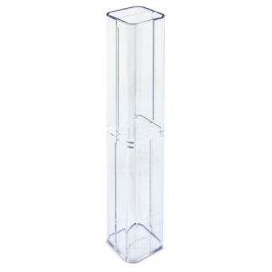

Tipos e variantes
Esferográficas
Instrumentos de ponta esférica; a documentação descreve variantes com tinta de base oleosa. Identifique o tipo de tinta na documentação. ↗
Aspetos que distinguem as opções: Botão, rotação ou tampa; traço, pega e recarga.
Contexto possível: Anotações rápidas, receção e uso diário.
Rollerballs e canetas de gel
A documentação descreve rollerballs com tinta aquosa ou de gel. O nome do tipo não basta para deduzir o tempo de secagem. ↗
Aspetos que distinguem as opções: Tinta, traço no papel habitual, tampa e recarga.
Contexto possível: Escrita prolongada, apontamentos e oferta individual.
Lápis e lapiseiras
Compare um lápis que se afia com uma lapiseira que recebe minas; os consumíveis e a preparação para escrever diferem.
Aspetos que distinguem as opções: Dureza e diâmetro da mina, avanço e borracha.
Contexto possível: Desenho, formação e tarefas em que apagar seja útil.
Marcadores e sublinhadores
Uma ponta fina para anotar e uma ponta biselada para destacar texto resolvem tarefas diferentes. Experimente a tinta no papel ou na superfície prevista, observando transparência no verso e secagem.
Aspetos que distinguem as opções: Formato da ponta, tampa, largura do traço e superfície de escrita indicada.
Contexto possível: Leitura, estudo, apresentação e marcação temporária conforme o instrumento.
Usos e contextos
- Numa distribuição ampla, teste escrita e leitura da mensagem sem depender da embalagem.
- Num conjunto individual, compare instrumento, recarga e estojo; confirme o que está incluído.

O que comparar
- Teste o traço no papel habitual e observe falhas, manchas e conforto.
- Acione o mecanismo e verifique se o clip interfere com a marca.
- Compare a recarga compatível e a forma de substituição; cargas semelhantes não são necessariamente intercambiáveis.
- Escolha primeiro a tarefa: texto contínuo, apontamentos rápidos, desenho ou destaque. Só depois avalie mecanismo, pega e apresentação.
- No lápis, experimente a dureza no papel habitual; na lapiseira, verifique diâmetro e forma de carregar a mina. O corpo semelhante não torna os consumíveis equivalentes.
Materiais e componentes
São possibilidades a identificar no artigo escolhido. Confirme a composição de cada parte; os materiais de uma variante não descrevem toda a família.
Corpo, clip e ponteira
metais
Distinguir metal de base e acabamento; verificar cada componente.
Zonas de personalização
- Corpo: Medir espaço livre, curvatura e orientação em relação ao clip.
- Clip ou tampa: Confirmar dimensão, mobilidade e acesso.
Técnicas e condições
Possibilidades gerais para comparar. A aplicação depende do artigo, da superfície, do desenho e das condições do processo; não está confirmada para um artigo específico.
Tampografia
A referência descreve aplicações em canetas; tinta, tampão e acabamento exigem avaliação do artigo. ↗
Gravação a laser
Avaliar superfície e efeito numa amostra; metal pintado não equivale a metal sem revestimento.
Impressão digital UV
Confirmar acesso, aderência, curvatura e legibilidade à dimensão final.
Limitações e cuidados
- Não atribua comprimento de escrita, resistência da tinta ou vida útil sem documentação.
- Uma maquete ampliada pode ocultar texto ilegível; reveja a marca à escala real.
- Siga as instruções de fecho, armazenamento e substituição de consumíveis. A referência identifica variantes recarregáveis, não toda a família. ↗
Antes de decidir
- Que papel e duração de escrita são habituais?
- O mecanismo e a pega são confortáveis?
- Qual é a recarga compatível?
- A marca cabe na área medida?
Perguntas frequentes
Uma caneta metálica pode sempre ser gravada?
Não. Metal de base, revestimento e efeito pretendido devem ser avaliados na superfície concreta.
O diâmetro da ponta é igual à largura do traço?
Não use os valores como equivalentes sem confirmação. Compare o traço indicado e teste no papel habitual.
Uma caneta recarregável aceita qualquer carga?
Não. Confirme identificação, encaixe e instruções da carga compatível.
Fontes e âmbito
As referências sustentam os factos identificados no texto. Os tipos, contextos e critérios de escolha são orientação editorial; as instruções de um fabricante aplicam-se ao seu próprio âmbito.
-
Esferográficas — variantes
Documentação técnica de referência · Consulta:Variantes com tinta de base oleosa e recarga; não generalizar a todos os instrumentos.
-
Rollerballs — perguntas frequentes
Documentação técnica de referência · Consulta:Tinta aquosa ou de gel em rollerballs; não estabelece desempenho de todas as canetas.
-
Guia de tampografia
Documentação técnica de referência · Consulta:Transferência com tampão e aplicações em objetos; não confirma aplicação num artigo.